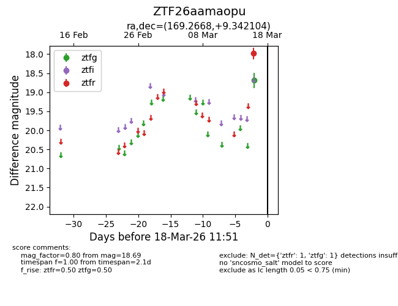
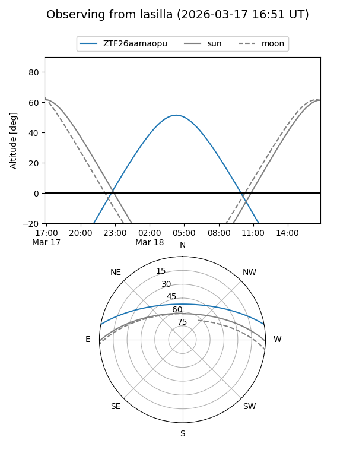
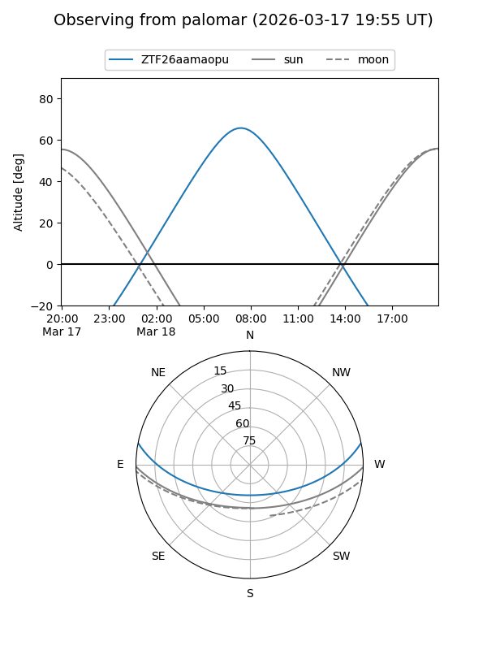

ZTF26aamaopu
Target ZTF26aamaopu at 2026-03-18 11:53
Aliases and brokers:
FINK: link
Lasair: link
ALeRCE: link
alt names
ZTF26aamaopu (ztf,fink_ztf)
Coordinates:
equatorial (ra, dec) = 169.2668,+9.34210
equatorial (HMS+DMS) = 11:17:04.04,+09:20:31.58
galactic (l, b) = (247.0791,+61.49789)
Flags:
Photometry:
last ztfg=18.69, ztfr=17.98
1 ztfg, 1 ztfr detections
Lightcurve

Visibility


Additional plots